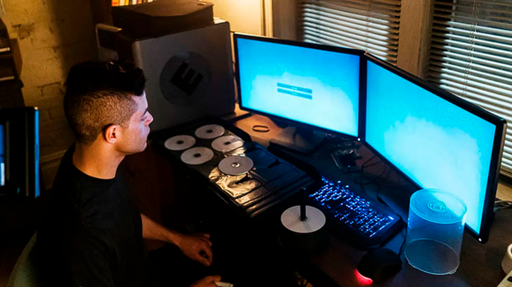

Synopsis
Elliot Alderson is a young man who works as a programmer by day and as a hacker by night. A mysterious anarchist who calls himself Mr. Robot asks him to join his group of hackers with the goal of destroying the company he works for.
Elliot Alderson is a young man who works as a programmer by day and as a hacker by night. A mysterious anarchist who calls himself Mr. Robot asks him to join his group of hackers with the goal of destroying the company he works for.
A fiction starring Rami Malek, winner of an Oscar for Best Actor for 'Bohemian Rhapsody', Mr. Robot is a technological thriller with 4 seasons and 46 episodes, inspired by other stories such as Blade Runner, Fight Club, A Clockwork Orange, V for Vendetta, and The Matrix, among others.
The story follows the life of Elliot Alderson, a young programmer with social interaction issues, who works as a cybersecurity technician for a major IT company during the day, and at night becomes a cyber vigilante entangled in a dark plot.
Mr. Robot truly stands out and solidifies itself as one of the great works of television: its creative risk-taking, its genre-shifting, and its mastery of the medium. This show pushes the boundaries of television in a way I've never seen before, even among its contemporaries of the Golden Age.
Elliot is mentally ill. He has dissociative identity disorder, which used to be known as multiple personality disorder. So parts of himself he's kind of fragmented into other people who he thinks he's talking to or seeing.
"Mr. Robot," is a techno thriller that follows Elliot, a young programmer, who works as a cyber-security engineer by day and as a vigilante hacker by night.
